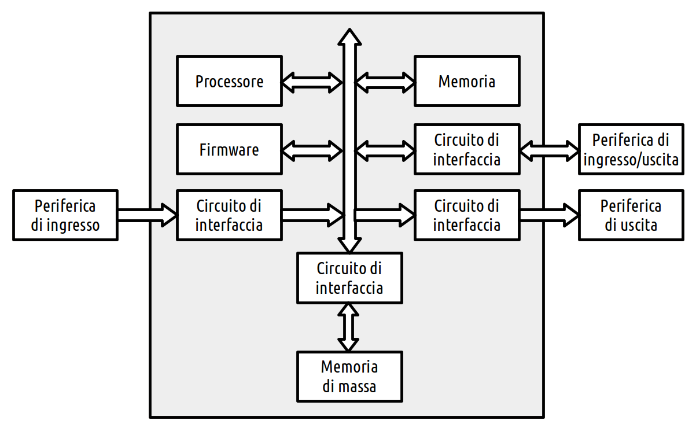
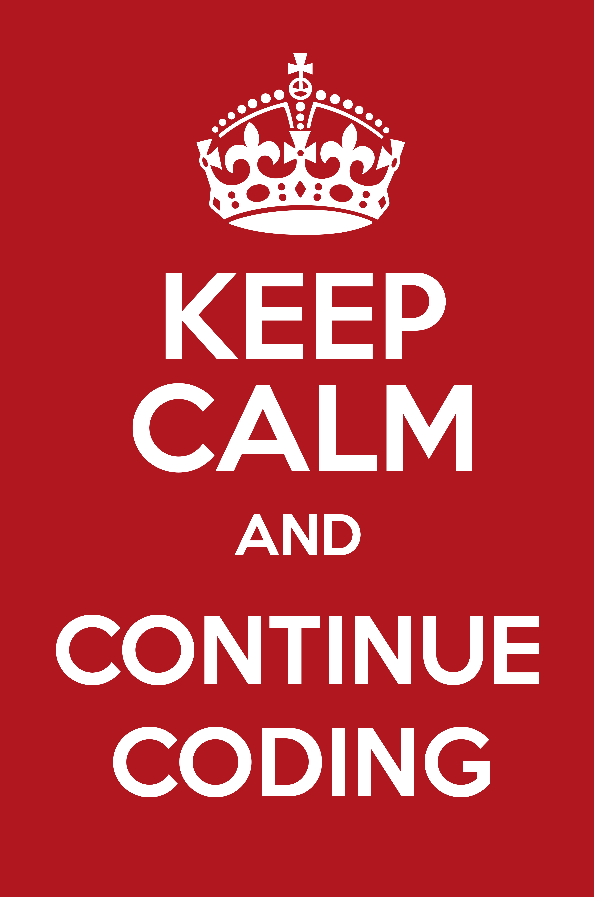

class: center, middle .title-header[Civiform] .title[Coding e Robotica] .subtitle[per l’innovazione sociale] .title-footer[Cividale, gennaio-febbraio 2022] --- class: center, middle .important[ [gzuliani.github.io/civiform/corso12](https://gzuliani.github.io/civiform/corso12)] --- class: center, middle .title[Architettura<br>dei calcolatori] --- .center[] .illustration[ Struttura dell’unità centrale] --- class: center, middle .title[Estensione “penna”] --- # Poligoni -- ```cpp /* QUADRATO: ripeti (4) volte fai (50) passi ruota ↺ di (90) gradi ``` --- # Poligoni ```cpp /* QUADRATO: ripeti (4) volte fai (50) passi ruota ↺ di (90) gradi TRIANGOLO: ripeti (3) volte fai (50) passi ruota ↺ di (120) gradi ``` --- # Poligoni ```cpp /* QUADRATO: ripeti (4) volte fai (50) passi ruota ↺ di (90) gradi TRIANGOLO: ripeti (3) volte fai (50) passi ruota ↺ di (120) gradi PENTAGONO: ripeti (5) volte fai (50) passi ruota ↺ di (72) gradi ``` --- # Poligoni ```cpp /* QUADRATO: ripeti (4) volte fai (50) passi ruota ↺ di (360/4) gradi TRIANGOLO: ripeti (3) volte fai (50) passi ruota ↺ di (120) gradi PENTAGONO: ripeti (5) volte fai (50) passi ruota ↺ di (72) gradi ``` --- # Poligoni ```cpp /* QUADRATO: ripeti (4) volte fai (50) passi ruota ↺ di (360/4) gradi TRIANGOLO: ripeti (3) volte fai (50) passi ruota ↺ di (360/3) gradi PENTAGONO: ripeti (5) volte fai (50) passi ruota ↺ di (72) gradi ``` --- # Poligoni ```cpp /* QUADRATO: ripeti (4) volte fai (50) passi ruota ↺ di (360/4) gradi TRIANGOLO: ripeti (3) volte fai (50) passi ruota ↺ di (360/3) gradi PENTAGONO: ripeti (5) volte fai (50) passi ruota ↺ di (360/5) gradi ``` --- # Algoritmo Disegno di un poligono con un numero di lati arbitrario: ```cpp /* POLIGONO: ripeti (NUM_LATI) volte fai (50) passi ruota ↺ di (360/NUM_LATI) gradi ``` --- # Poligoni in sequenza Disegno dal triangolo all’icosangolo: ```cpp /* porta [NUM_LATI] a 3 ripeti (18) volte DISEGNA_POLIGONO cambia [NUM_LATI] di (1) ``` --- # Poligoni in sequenza Disegno dal triangolo all’icosangolo: ```cpp /* porta [NUM_LATI] a 3 ripeti (18) volte ripeti (NUM_LATI) volte fai (50) passi ruota ↺ di (360/NUM_LATI) gradi cambia [NUM_LATI] di (1) ``` --- # Spirale quadrata Spirale quadrata con origine al centro dello schermo: ```cpp /* vai a x: (0) y: (0) punta in direzione (90) porta [PASSI] a 10 ripeti fino a quando <sta toccando (bordo)> ripeti (2) volte fai (PASSI) passi ruota ↺ di (360/NUM_LATI) gradi cambia [PASSI] di 10 ``` --- # Coding con Scratch -- * variabili -- — attribuiscono un nome a un valore -- * cicli nidificati -- ```cpp /* porta [PASSI] a 10 ripeti fino a quando <sta toccando (bordo)> ripeti (2) volte fai (PASSI) passi ruota ↺ di (360/NUM_LATI) gradi cambia [PASSI] di 10 ``` --- # Coding con Scratch * variabili — attribuiscono un nome a un valore * cicli nidificati ```cpp /* porta [PASSI] a 10 * ripeti fino a quando <sta toccando (bordo)> * ripeti (2) volte fai (PASSI) passi ruota ↺ di (360/NUM_LATI) gradi cambia [PASSI] di 10 ``` --- # Coding con Scratch * variabili — attribuiscono un nome a un valore * cicli nidificati * cicli condizionati -- ```cpp /* ripeti fino a quando <…> … ``` --- # Coding con Scratch * variabili — attribuiscono un nome a un valore * cicli nidificati * cicli condizionati * .keyword[porta], .keyword[cambia] --- # Considerazioni -- * schemi ricorrenti confluiscono in cicli -- * importanza della fase di inizializzazione del programma -- * intrinseca difficoltà del .keyword[debug] --- class: center, middle .center[] --- # Errori più comuni -- * blocchi fuori posizione -- * rispetto ai blocchi vicini (**prima** vs. **dopo**) -- * rispetto a un ciclo vicino (**dentro** vs. **fuori**) -- * valori dei parametri errati -- * modifica della variabile sbagliata -- * condizioni non corrette --- # Considerazioni * schemi ricorrenti confluiscono in cicli * importanza della fase di inizializzazione del programma * intrinseca difficoltà del .keyword[debug] --- # Considerazioni * schemi ricorrenti confluiscono in cicli * importanza della fase di inizializzazione del programma * intrinseca difficoltà del .keyword[debug] * esercitarsi nella scrittura e nella lettura del codice --- class: center, middle [ah, i bei vecchi tempi…](https://archive.org/details/Papersoft-1984-10/mode/2up?view=theater) --- class: center, middle .title[Mondo sommerso]